Let's start in one dimension. Suppose we have a function $f : \R \rightarrow \R$ that we want to minimize with no constraints.
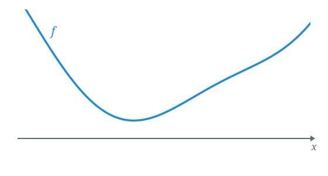
In practice, the function we need to compute may be quite complicated, so finding a minimum explicitly might be quite difficult.
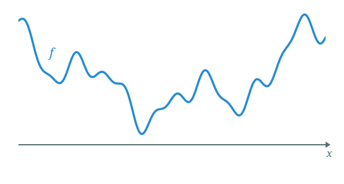
Since $f$ is complicated, let's try to approximate $f$ by a simpler function. The standard choice from calculus is a linear function (assuming $f$ is differentiable).
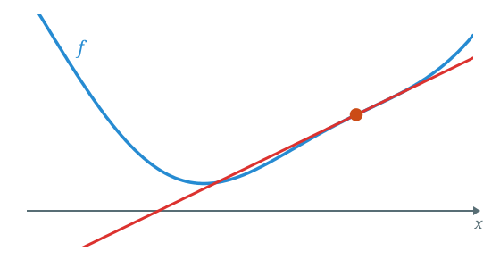
For any $x_0 \in \R$, recall from calculus that the tangent line to $f$ is given by $f(x_0) + \frac{d}{dx}f(x_0)(x - x_0)$.
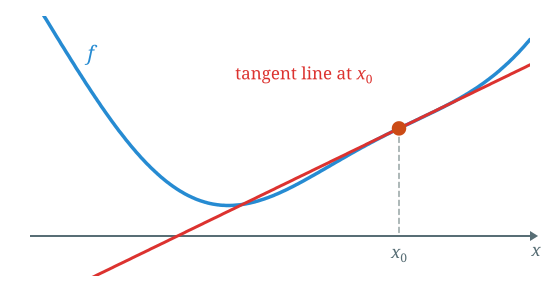
What if we try to minimize $f(x_0) + \frac{d}{dx}f(x_0)(x - x_0)$ instead? Well if $\frac{d}{dx}f(x_0) > 0$, then this is unbounded, getting smaller as $x$ tends to $-\infty$.
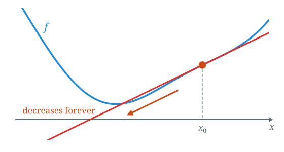
Well if $\frac{d}{dx}f(x_0) < 0$, then this is also unbounded, getting smaller as $x$ tends to $\infty$.
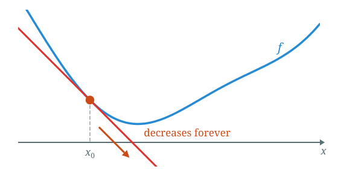
If $\frac{d}{dx}f(x_0) = 0$, then $x_0$ is a critical point of the function. This is necessary for any minimizer of $f$.
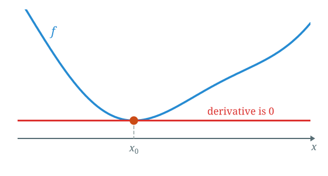
This linear approximation of $f$ gives us some information; if $\frac{d}{dx}f(x_0) > 0$, then we'd expect the minimum to be smaller than $x_0$, and if $\frac{d}{dx}f(x_0) < 0$, then we expect the minimum to be larger than $x_0$.
But, it doesn't suggest how to actually make an improvement.
The issue is that when $x$ is far from $x_0$, the linear approximation given by the tangent line is a poor approximation for $f$.
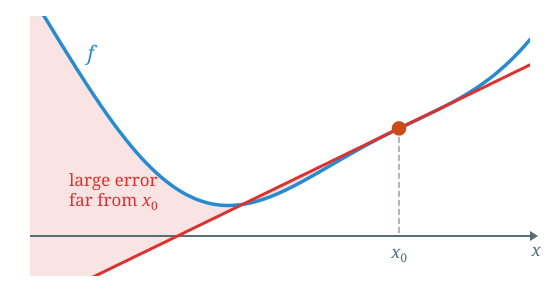
Let's try a different approximation to $f$: pick an $h > 0$, and consider the function \[ f(x_0) + \frac{d}{dx}f(x_0)(x - x_0) + \frac{1}{2h}(x - x_0)^2. \]
This has the same value and derivative at $x_0$, but it also includes a quadratic term.
When $x$ is close to $x_0$, this is close to the tangent line, but when $x$ is far from $x_0$, this lies above the tangent line.
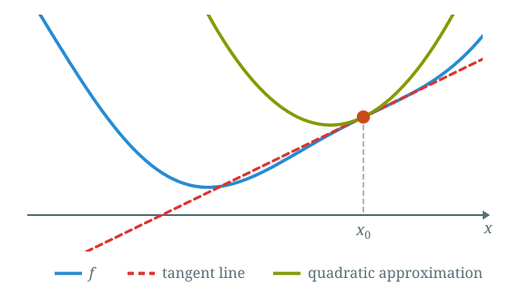
How do we minimize \[ f(x_0) + \frac{d}{dx}f(x_0)(x - x_0) + \frac{1}{2h}(x - x_0)^2? \]
If we take the derivative of this function, we get \[ \frac{d}{dx}f(x_0) + \frac{1}{h}(x - x_0). \]
There is only one point that makes this 0: \[ \boxed{x = x_0 - h \frac{d}{dx}f(x_0).} \]
This is the basic update that is used by gradient descent.
Calculus Aside: What value of $h$ results in the best quadratic approximation of $f$, \[ f(x_0) + \frac{d}{dx}f(x_0)(x - x_0) + \frac{1}{2h}(x - x_0)^2? \]
If $f$ is two times differentiable, then the best choice of $h$ is $h = (\frac{d^2}{dx^2}f(x_0))^{-1}.$ This follows from Taylor expanding $f$ at $x_0$.
Using this as the update yields Newton's method, which is also a powerful optimization method.
The basic gradient descent algorithm has a fixed parameter $h$ and defines a sequence \[ x_{i+1} = x_i - h \frac{d}{dx}f(x_i), \] for $x_0$ arbitrary and $i = 0, 1, 2, \dots$
As an example, let's take $f(x) = \frac{1}{3}x^2$, $h = 1$.
$\frac{d}{dx}f(x) = \frac{2}{3}x, $ so \[ x_{i+1} = x_i - h \frac{d}{dx}f(x_i) = \frac{1}{3}x_i. \]
We can give a closed form for $x_i$: \[ x_i = \left(\frac{1}{3}\right)^i x_0. \]
In the limit as $i \rightarrow \infty$, we see that \[ \lim_{i \rightarrow \infty}x_i = 0, \] which is a minimizer of $f(x)$ no matter what $x_0$ is.
As another example, let's take $f(x) = \frac{1}{4}(x - 1)^2$, $h = 1$.
$\frac{d}{dx}f(x) = \frac{1}{2}(x - 1), $ so \[ x_{i+1} = x_i - h \frac{d}{dx}f(x_i) = \frac{1}{2}x_i + \frac{1}{2}. \]
We can solve this recurrence to see that \[ x_i = \left(\frac{1}{2}\right)^ix_0 + 1 - \left(\frac{1}{2}\right)^i. \]
In the limit as $i \rightarrow \infty$, we see that \[ \lim_{i \rightarrow \infty}x_i = 1, \] which is a minimizer of $f(x)$.
Usually, we cannot find a closed form solution for the iterates of gradient descent. Instead, we just have to numerically compute the iterates.
If we are carrying out gradient descent by hand, we can draw a table that shows the sequence.
\[ f(x) = \frac{1}{2}(x^2 + \sin(x)), \qquad \frac{d}{dx}f(x) = x + \frac{1}{2}\cos(x), \qquad h = 1 \]
\[ \begin{array}{c|ccc} i & x_i & \frac{d}{dx}f(x_i) & x_{i+1} = x_i - h\frac{d}{dx}f(x_i) \\ \hline 0 & 2 & 1.7919 & 0.2081 \\ 1 & 0.2081 & 0.6973 & -0.4892 \\ 2 & -0.4892 & -0.0479 & -0.4414 \\ 3 & -0.4414 & 0.0107 & -0.4521 \\ 4 & -0.4521 & -0.0023 & -0.4498 \\ 5 & -0.4498 & 0.0005 & -0.4503 \end{array} \]
Does gradient descent always converge to a minimizer of the function?
Consider the function $f(x) = |x|$, whose derivative is \[ \frac{d}{dx}f(x) = \begin{cases} 1 \text{ if }x > 0\\ -1 \text{ if }x < 0 \\ \text{undefined if }x = 0\end{cases}. \]
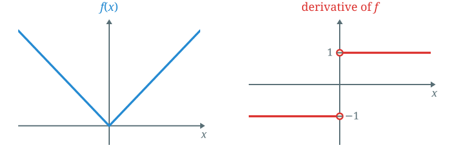
For any given $h > 0$, let's pick $x_0 = \frac{h}{2}$, and note that we get the following behavior:
\[ x_{1} = x_0 - h \frac{d}{dx}f(x_0) = x_0 - h = - \frac{h}{2} \]
\[ x_{2} = x_1 - h \frac{d}{dx}f(x_1) = x_1 + h = \frac{h}{2} \]
\[ x_{3} = x_2 - h \frac{d}{dx}f(x_2) = x_2 - h = -\frac{h}{2} \]
We cycle! Each time we apply one iteration, we get that $x_{i+1} = -x_i$, and $|x_i|$ never gets smaller than $\frac{h}{2}$.
The limiting behavior of gradient descent on this function is quite interesting.
Gradient descent does not always converge; and the function $|x|$ seems to be particularly bad for this algorithm. Why?
One thing to note is that the derivative of the function $|x|$ is discontinuous. Is this the cause of the issue?
We can give “bad” examples for any step size $h$ even when the derivative is continuous.
We can make the derivative continuous by changing it in an arbitrarily small region. For any fixed step size $h$, an example like this will still lead to cycling.
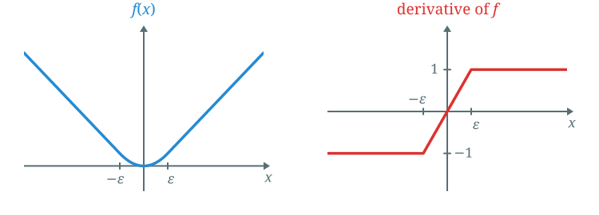
Fix some number $L$. We will say that a twice differentiable function is $L$-bounded if its second derivative is at most $L$ for all $x$.
Examples:
Theorem (Descent Lemma)
A twice differentiable function $f$ is $L$-bounded if and only if for all $x, y \in \R$, \[ f(x) \le f(y) + \frac{d}{dx}f(y)(x - y) + \frac{L}{2}(x-y)^2. \]
Proof: If the function is $L$-bounded, then $\frac{d^2}{dx^2}f(t) \le L$ for all $t$, so for $x \ge y$, \[ \frac{d}{dx}f(x) = \frac{d}{dx}f(y) + \int_{y}^x\frac{d^2}{dx^2}f(t)\, dt \le \frac{d}{dx}f(y) + L(x-y). \]
Theorem (Descent Lemma)
A twice differentiable function $f$ is $L$-bounded if and only if for all $x, y \in \R$, \[ f(x) \le f(y) + \frac{d}{dx}f(y)(x - y) + \frac{L}{2}(x-y)^2. \]
We can also get that \[ \begin{aligned} f(x) = f(y) + \int_{y}^x \frac{d}{dx}f(t)\, dt &\le f(y) + \int_{y}^x \left(\frac{d}{dx}f(y) + L (t-y)\right) dt \\ &= f(y) + \frac{d}{dx}f(y)(x-y) + \frac{L}{2} (x-y)^2. \end{aligned} \]
The case $x < y$ is similar. The other direction is a more detailed calculus exercise.
Theorem (Gradient Descent Convergence)
Suppose that a function $f(x)$ satisfies, for all $x, y \in \R$, \[ f(x) \le f(y) + \frac{d}{dx}f(y)(x - y) + \frac{L}{2}(x-y)^2, \] and we fix any $x_0$ and let $x_{i+1} = x_{i} - h \frac{d}{dx}f(x_i)$ with $h = \frac{1}{L}$. Then \[ \sum_{k=0}^{T-1}\left(\frac{d}{dx} f(x_k)\right)^2 \le 2L(f(x_0) - f(x_T)). \]
Proof: This is a telescoping summation trick. The inequality (with $x = x_{i+1}$ and $y = x_i$) implies that \[ f(x_{i+1}) \le f(x_{i}) + \frac{d}{dx}f(x_i)(x_{i+1} - x_i) + \frac{L}{2}(x_{i+1}-x_i)^2. \]
Plugging in the definition of gradient descent gives \[ \begin{aligned} f(x_{i+1}) &\le f(x_{i}) - h \left(\frac{d}{dx}f(x_i)\right)^2 + \frac{L}{2}\left(h\frac{d}{dx}f(x_i)\right)^2\\ &= f(x_{i}) - \frac{1}{L} \left(\frac{d}{dx}f(x_i)\right)^2 + \frac{1}{2L}\left(\frac{d}{dx}f(x_i)\right)^2\\ &= f(x_{i}) - \frac{1}{2L} \left(\frac{d}{dx}f(x_i)\right)^2. \end{aligned} \]
Rearranging gives \[ \left(\frac{d}{dx}f(x_i)\right)^2 \le 2L (f(x_i) - f(x_{i+1})). \]
Add up these inequalities from $i = 0$ to $i = T-1$ to get \[ \sum_{i=0}^{T-1} \left(\frac{d}{dx}f(x_i)\right)^2 \le 2L\sum_{i=0}^{T-1} (f(x_i) - f(x_{i+1})). \] Note that every term in the right sum appears once with a positive coefficient and once with a negative coefficient, except for $f(x_0)$ and $f(x_T)$, so most terms cancel and we get
\[ \sum_{i=0}^{T-1} \left(\frac{d}{dx}f(x_i)\right)^2 \le 2L(f(x_0) - f(x_T)). \]
Theorem (Gradient Descent Convergence II)
Suppose that $f$ is $L$-bounded, and it also has a minimizer $x_*$. If $x_0, x_1, x_2, \dots$ are produced by gradient descent with $h = \frac{1}{L}$, then \[ \lim_{i \rightarrow \infty} \left(\frac{d}{dx}f(x_i)\right)^2 = 0. \]
Proof: Suppose that this limit was not 0. Then for some $\delta > 0$, there are infinitely many $i$ with $\left(\frac{d}{dx}f(x_i)\right)^2 > \delta$. In particular, for any $k$, there is some $T$ so that at least $k$ values of $i < T$ have this property, and then \[ \sum_{i=0}^{T-1} \left(\frac{d}{dx}f(x_i)\right)^2 > k \delta. \]
Theorem (Gradient Descent Convergence II)
Suppose that $f$ is $L$-bounded, and it also has a minimizer $x_*$. If $x_0, x_1, x_2, \dots$ are produced by gradient descent with $h = \frac{1}{L}$, then \[ \lim_{i \rightarrow \infty} \left(\frac{d}{dx}f(x_i)\right)^2 = 0. \]
For $k > \frac{2L(f(x_0) - f(x_*))}{\delta}$, we see that \[ \sum_{i=0}^{T-1} \left(\frac{d}{dx}f(x_i)\right)^2 > 2L(f(x_0) - f(x_*)) \ge 2L(f(x_0) - f(x_T)), \] which contradicts the last theorem.
This implies that if the second derivative of $f$ is bounded, then for a certain choice of the step size, gradient descent eventually finds a point where $\frac{d}{dx}f(x_i)$ is arbitrarily close to 0.
This does not imply that the sequence $x_i$ converges, or that we converge to a minimum of the function. If the function is convex, then we can get this guarantee as well.
Theorem (Second Derivatives and Convexity)
If $f:\R\rightarrow \R$ is twice differentiable, then $f$ is convex if and only if $\frac{d^2}{dx^2} f(x) \ge 0$ for all $x \in \R$.
Proof: At a high level, if $\frac{d^2}{dx^2}f(x_0) < 0$ for some $x_0$, then the Taylor expansion of $f$ reads \[ f(x) \approx Q(x) = f(x_0) + \frac{d}{dx}f(x_0) (x-x_0) + \frac{1}{2}\frac{d^2}{dx^2}f(x_0) (x-x_0)^2. \]
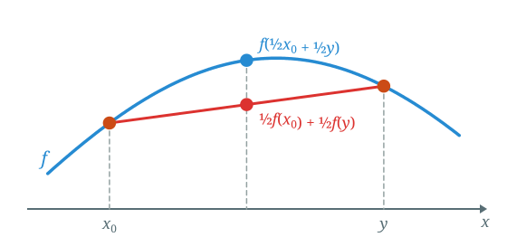
Theorem (Second Derivatives and Convexity)
If $f:\R\rightarrow \R$ is twice differentiable, then $f$ is convex if and only if $\frac{d^2}{dx^2} f(x) \ge 0$ for all $x \in \R$.
Note that $Q$ satisfies \[ \begin{aligned} Q(\tfrac{1}{2}x_0 + \tfrac{1}{2}y) &= \tfrac{1}{2}Q(x_0) + \tfrac{1}{2}Q(y) - \tfrac{1}{8}\frac{d^2}{dx^2}f(x_0)(x_0 - y)^2 \\ &> \tfrac{1}{2}Q(x_0) + \tfrac{1}{2}Q(y) \end{aligned} \] for $y \neq x_0$, since $\frac{d^2}{dx^2}f(x_0) < 0$.
Theorem (Second Derivatives and Convexity)
If $f:\R\rightarrow \R$ is twice differentiable, then $f$ is convex if and only if $\frac{d^2}{dx^2} f(x) \ge 0$ for all $x \in \R$.
If we make the Taylor approximation more quantitative (by noting that the error is $o((x_0-y)^2)$ in the language of calculus), then we get that for $y$ close enough to $x_0$, \[ f(\tfrac{1}{2} x_0 + \tfrac{1}{2}y) > \tfrac{1}{2} f(x_0) + \tfrac{1}{2}f(y), \] so $f$ is not convex.
Theorem (Second Derivatives and Convexity)
If $f:\R\rightarrow \R$ is twice differentiable, then $f$ is convex if and only if $\frac{d^2}{dx^2} f(x) \ge 0$ for all $x \in \R$.
Proof: If $\frac{d^2}{dx^2} f(x) \ge 0$ for all $x$, then the function $f'(x) = \frac{d}{dx}f(x)$ is monotonic increasing for all $x$. We want to show that for any $x,y \in \R$, and $t \in [0,1]$, \[ f(t x + (1-t)y) \le t f(x) + (1-t)f(y). \] Let $z = t x + (1-t)y$. We can assume without loss of generality that $x \le z \le y$. Note that \[ f(z) - tf(x) - (1-t)f(y) = t (f(z) - f(x)) + (1-t)(f(z) - f(y)). \]
Theorem (Second Derivatives and Convexity)
If $f:\R\rightarrow \R$ is twice differentiable, then $f$ is convex if and only if $\frac{d^2}{dx^2} f(x) \ge 0$ for all $x \in \R$.
Since $f'$ is increasing, we can write \[ \begin{aligned} f(z) - f(x) &= \int_x^z f'(s)\, ds \le f'(z) (z - x), \\ f(y) - f(z) &= \int_z^y f'(s)\, ds \ge f'(z)(y-z). \end{aligned} \] So \[ \begin{aligned} t (f(z) - f(x)) + (1-t)(f(z) - f(y)) &\le f'(z)\left(t(z-x) - (1-t)(y-z)\right) \\ &= f'(z)\left(z - tx - (1-t)y\right) = 0. \end{aligned} \]
Theorem (Convergence Rate for Convex Functions)
Suppose that $f$ is convex and $L$-bounded, and it has a minimizer $x_*$. If $x_0, x_1, x_2, \dots$ are produced by gradient descent with $h = \frac{1}{L}$, then \[ f(x_n) - f(x_*) \le \frac{L(x_0 - x_*)^2}{2n} \quad \text{for all } n \ge 1. \]
Proof: Since $f$ is $L$-bounded and $h = \frac{1}{L}$, \[ f(x_{i+1}) \le f(x_i) - \frac{1}{2L}\left(\frac{d}{dx}f(x_i)\right)^2. \]
Since $f$ is convex, its graph lies above its tangent lines, so \[ f(x_i) \le f(x_*) + \frac{d}{dx}f(x_i)(x_i - x_*). \]
Combining the two inequalities and using $x_{i+1} = x_i - \frac{1}{L}\frac{d}{dx}f(x_i)$, \[ \begin{aligned} f(x_{i+1}) - f(x_*) &\le \frac{d}{dx}f(x_i)(x_i - x_*) - \frac{1}{2L}\left(\frac{d}{dx}f(x_i)\right)^2 \\ &= \frac{L}{2}\left((x_i - x_*)^2 - \left(x_i - x_* - \frac{1}{L}\frac{d}{dx}f(x_i)\right)^2\right) \\ &= \frac{L}{2}\left((x_i - x_*)^2 - (x_{i+1} - x_*)^2\right). \end{aligned} \]
Adding up from $i = 0$ to $i = n-1$, the right side telescopes: \[ \sum_{i=0}^{n-1} (f(x_{i+1}) - f(x_*)) \le \frac{L}{2}\left((x_0 - x_*)^2 - (x_n - x_*)^2\right) \le \frac{L}{2}(x_0 - x_*)^2. \]
Since $f(x_{i+1}) \le f(x_i)$, each term is at least $f(x_n) - f(x_*)$, so \[ n(f(x_n) - f(x_*)) \le \frac{L}{2}(x_0 - x_*)^2. \]
Now suppose we have a function $f : \R^n \rightarrow \R$ of several variables $x = (x_1, \dots, x_n)$ that we want to minimize with no constraints.
The gradient of $f$ at $x$ is the vector of partial derivatives of $f$: \[ \nabla f(x) = \begin{pmatrix} \frac{\partial f}{\partial x_1}(x) \\ \vdots \\ \frac{\partial f}{\partial x_n}(x) \end{pmatrix}. \]
The gradient plays the role of the derivative $\frac{d}{dx}f(x)$. When $n = 1$, it is exactly the derivative.
The Hessian of $f$ at $x$ is the $n \times n$ matrix of second partial derivatives of $f$: \[ \nabla^2 f(x) = \begin{pmatrix} \frac{\partial^2 f}{\partial x_1 \partial x_1}(x) & \cdots & \frac{\partial^2 f}{\partial x_1 \partial x_n}(x) \\ \vdots & \ddots & \vdots \\ \frac{\partial^2 f}{\partial x_n \partial x_1}(x) & \cdots & \frac{\partial^2 f}{\partial x_n \partial x_n}(x) \end{pmatrix}. \]
The Hessian plays the role of the second derivative $\frac{d^2}{dx^2}f(x)$.
If the second partial derivatives of $f$ are continuous, then $\nabla^2 f(x)$ is a symmetric matrix, so all of its eigenvalues are real numbers. We will assume this from now on.
Example: $f(x_1, x_2) = x_1^2 x_2 + \sin(x_2)$.
\[ \nabla f(x) = \begin{pmatrix} 2x_1x_2 \\ x_1^2 + \cos(x_2) \end{pmatrix} \]
\[ \nabla^2 f(x) = \begin{pmatrix} 2x_2 & 2x_1 \\ 2x_1 & -\sin(x_2) \end{pmatrix} \]
Fix some number $L$. We will say that $f : \R^n \rightarrow \R$ is $L$-bounded if every eigenvalue of the Hessian $\nabla^2 f(x)$ is at most $L$ for all $x \in \R^n$.
When $n = 1$, the Hessian is the $1 \times 1$ matrix $\begin{pmatrix}\frac{d^2}{dx^2}f(x)\end{pmatrix}$, whose only eigenvalue is $\frac{d^2}{dx^2}f(x)$, so this agrees with our earlier definition.
To find $L$: compute the Hessian $\nabla^2 f(x)$, find its largest eigenvalue $\lambda_{\max}(\nabla^2 f(x))$, and find a number $L$ so that \[ \lambda_{\max}(\nabla^2 f(x)) \le L \quad \text{for all } x \in \R^n. \]
Examples:
The gradient descent algorithm has a fixed parameter $h$ and defines a sequence of points $x^{(0)}, x^{(1)}, x^{(2)}, \dots$ in $\R^n$ by \[ x^{(i+1)} = x^{(i)} - h \nabla f(x^{(i)}), \] for $x^{(0)}$ arbitrary and $i = 0, 1, 2, \dots$
We write $x^{(i)}$ for the $i$-th point of the sequence, since $x_i$ now denotes the $i$-th coordinate of $x$.
Each theorem about gradient descent in one dimension has a multivariate analogue: replace $\frac{d}{dx}f$ by $\nabla f$, products by dot products, and squares by squared lengths $\|v\|^2 = v_1^2 + \dots + v_n^2$.
Theorem (Descent Lemma)
A function $f : \R^n \rightarrow \R$ is $L$-bounded if and only if for all $x, y \in \R^n$, \[ f(x) \le f(y) + \nabla f(y)^{\top}(x - y) + \frac{L}{2}\|x-y\|^2. \]
Theorem (Gradient Descent Convergence)
Suppose that a function $f : \R^n \rightarrow \R$ satisfies, for all $x, y \in \R^n$, \[ f(x) \le f(y) + \nabla f(y)^{\top}(x - y) + \frac{L}{2}\|x-y\|^2, \] and we fix any $x^{(0)}$ and let $x^{(i+1)} = x^{(i)} - h \nabla f(x^{(i)})$ with $h = \frac{1}{L}$. Then \[ \sum_{k=0}^{T-1}\|\nabla f(x^{(k)})\|^2 \le 2L(f(x^{(0)}) - f(x^{(T)})). \]
Theorem (Gradient Descent Convergence II)
Suppose that $f : \R^n \rightarrow \R$ is $L$-bounded, and it also has a minimizer $x^*$. If $x^{(0)}, x^{(1)}, x^{(2)}, \dots$ are produced by gradient descent with $h = \frac{1}{L}$, then \[ \lim_{i \rightarrow \infty} \|\nabla f(x^{(i)})\|^2 = 0. \]
Theorem (Second Derivatives and Convexity)
If $f:\R^n\rightarrow \R$ has continuous second partial derivatives, then $f$ is convex if and only if every eigenvalue of $\nabla^2 f(x)$ is at least $0$ for all $x \in \R^n$.
Theorem (Convergence Rate for Convex Functions)
Suppose that $f : \R^n \rightarrow \R$ is convex and $L$-bounded, and it has a minimizer $x^*$. If $x^{(0)}, x^{(1)}, x^{(2)}, \dots$ are produced by gradient descent with $h = \frac{1}{L}$, then \[ f(x^{(n)}) - f(x^*) \le \frac{L\|x^{(0)} - x^*\|^2}{2n} \quad \text{for all } n \ge 1. \]
As an example, let's take the quadratic function $f(x_1, x_2) = x_1^2 + x_1x_2 + x_2^2$.
\[ \nabla f(x) = \begin{pmatrix} 2x_1 + x_2 \\ x_1 + 2x_2 \end{pmatrix}, \qquad \nabla^2 f(x) = \begin{pmatrix} 2 & 1 \\ 1 & 2 \end{pmatrix} \]
\[ \det\begin{pmatrix} 2 - \lambda & 1 \\ 1 & 2 - \lambda \end{pmatrix} = (2-\lambda)^2 - 1 = (\lambda - 1)(\lambda - 3) \]
The eigenvalues are $1$ and $3$, so $f$ is convex and $3$-bounded. We take $L = 3$ and $h = \frac{1}{3}$.
$f(x_1, x_2) = x_1^2 + x_1x_2 + x_2^2$, $h = \frac{1}{3}$.
\[ x^{(i+1)} = x^{(i)} - \frac{1}{3}\begin{pmatrix} 2 & 1 \\ 1 & 2 \end{pmatrix}x^{(i)} = \frac{1}{3}\begin{pmatrix} 1 & -1 \\ -1 & 1 \end{pmatrix}x^{(i)} \]
Starting from $x^{(0)} = \begin{pmatrix} 3 \\ 0 \end{pmatrix}$: \[ x^{(1)} = \begin{pmatrix} 1 \\ -1 \end{pmatrix}, \quad x^{(2)} = \frac{2}{3}\begin{pmatrix} 1 \\ -1 \end{pmatrix}, \quad \dots, \quad x^{(i)} = \left(\frac{2}{3}\right)^{i-1}\begin{pmatrix} 1 \\ -1 \end{pmatrix} \]
\[ \lim_{i \rightarrow \infty} x^{(i)} = \begin{pmatrix} 0 \\ 0 \end{pmatrix}, \] which is the minimizer of $f$.
A stranger example: $f(x_1, x_2) = \|x\| = \sqrt{x_1^2 + x_2^2}$, the multivariate analogue of $|x|$.
For $x \neq 0$, \[ \nabla f(x) = \frac{1}{\|x\|}\begin{pmatrix} x_1 \\ x_2 \end{pmatrix}, \qquad \nabla^2 f(x) = \frac{1}{\|x\|^3}\begin{pmatrix} x_2^2 & -x_1x_2 \\ -x_1x_2 & x_1^2 \end{pmatrix} \]
The eigenvalues of $\nabla^2 f(x)$ are $0$ and $\frac{1}{\|x\|}$, which is unbounded as $x$ approaches $0$. This function is not $L$-bounded for any $L$.
$f(x_1, x_2) = \|x\|$, with any $h > 0$.
\[ x^{(i+1)} = x^{(i)} - \frac{h}{\|x^{(i)}\|}x^{(i)} = \left(1 - \frac{h}{\|x^{(i)}\|}\right)x^{(i)} \]
Starting from any $x^{(0)}$ with $\|x^{(0)}\| = \frac{h}{2}$: \[ x^{(1)} = (1 - 2)x^{(0)} = -x^{(0)}, \qquad x^{(2)} = -x^{(1)} = x^{(0)}, \quad \dots \]
We cycle, just as we did for $|x|$.
Another example: $f(x_1, x_2) = x_1^2 + x_2^2 + \sin(x_1 + x_2)$.
\[ \nabla f(x) = \begin{pmatrix} 2x_1 + \cos(x_1 + x_2) \\ 2x_2 + \cos(x_1 + x_2) \end{pmatrix} \]
\[ \nabla^2 f(x) = \begin{pmatrix} 2 - \sin(x_1 + x_2) & -\sin(x_1 + x_2) \\ -\sin(x_1 + x_2) & 2 - \sin(x_1 + x_2) \end{pmatrix} \]
The eigenvalues of $\begin{pmatrix} a & b \\ b & a \end{pmatrix}$ are $a + b$ and $a - b$, so the eigenvalues of $\nabla^2 f(x)$ are \[ 2 - 2\sin(x_1 + x_2) \quad \text{and} \quad 2. \]
These are always between $0$ and $4$, so $f$ is convex and $4$-bounded. We take $L = 4$ and $h = \frac{1}{4}$.
$f(x_1, x_2) = x_1^2 + x_2^2 + \sin(x_1 + x_2)$, $h = \frac{1}{4}$, $x^{(0)} = (2, -1)$.
\[ \begin{array}{c|ccc} i & x^{(i)} & \nabla f(x^{(i)}) & f(x^{(i)}) \\ \hline 0 & (2, -1) & (4.5403, -1.4597) & 5.8415 \\ 1 & (0.8649, -0.6351) & (2.7035, -0.2965) & 1.3792 \\ 2 & (0.1890, -0.5610) & (1.3097, -0.1903) & -0.0130 \\ 3 & (-0.1384, -0.5134) & (0.5182, -0.2318) & -0.3239 \\ 4 & (-0.2679, -0.4554) & (0.2137, -0.1613) & -0.3827 \\ 5 & (-0.3214, -0.4151) & (0.0981, -0.0894) & -0.3961 \\ 6 & (-0.3459, -0.3928) & (0.0476, -0.0462) & -0.3994 \end{array} \]
A non-convex example: $f(x_1, x_2) = \sin(x_1) + \cos(x_2)$.
\[ \nabla f(x) = \begin{pmatrix} \cos(x_1) \\ -\sin(x_2) \end{pmatrix}, \qquad \nabla^2 f(x) = \begin{pmatrix} -\sin(x_1) & 0 \\ 0 & -\cos(x_2) \end{pmatrix} \]
The eigenvalues are $-\sin(x_1)$ and $-\cos(x_2)$, which are between $-1$ and $1$. So $f$ is $1$-bounded, but it is not convex. We take $L = 1$ and $h = 1$.
Since $f$ has a minimizer (its smallest value is $-2$), the gradients $\nabla f(x^{(i)})$ must converge to $0$.
$f(x_1, x_2) = \sin(x_1) + \cos(x_2)$, $h = 1$, $x^{(0)} = (0, 1)$.
\[ \begin{array}{c|ccc} i & x^{(i)} & \nabla f(x^{(i)}) & f(x^{(i)}) \\ \hline 0 & (0, 1) & (1, -0.8415) & 0.5403 \\ 1 & (-1, 1.8415) & (0.5403, -0.9636) & -1.1089 \\ 2 & (-1.5403, 2.8051) & (0.0305, -0.3302) & -1.9434 \\ 3 & (-1.5708, 3.1353) & (0.0000, -0.0063) & -2.0000 \\ 4 & (-1.5708, 3.1416) & (0.0000, 0.0000) & -2.0000 \end{array} \]
The sequence approaches $(-\frac{\pi}{2}, \pi)$, which is a minimizer of $f$.